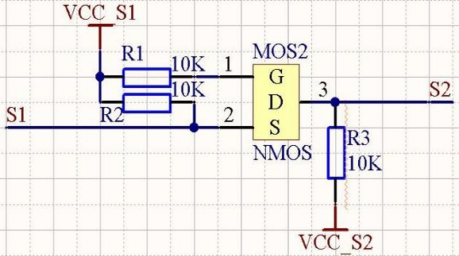
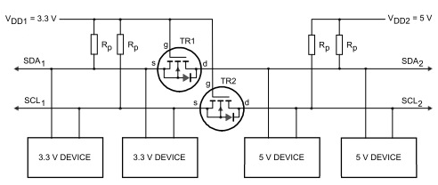
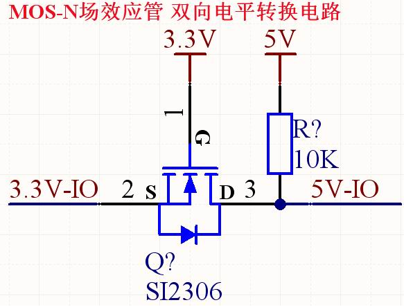

当你使用3.3V的单片机的时候，电平转换就在所难免了，经常会遇到3.3转5V或者5V转3.3V的情况，这里介绍一个简单的电路，他可以实现两个电平的相互转换(注意是相互哦，双向的，不是单向的!).电路十分简单，仅由3个电阻加一个MOS管构成。
电路图如下:

上图中，S1，S2为两个信号端，VCC_S1和VCC_S2为这两个信号的高电平电压.另外限制条件为:
1，VCC_S1<=VCC_S2.
2，S1的低电平门限大于0.7V左右(视NMOS内的二极管压降而定).
3，Vgs<=VCC_S1.
4，Vds<=VCC_S2
对于3.3V和5V/12V等电路的相互转换，NMOS管选择AP2306即可.原理比较简单，大家自行分析吧!此电路我已在多处应用，效果很好.

I2C
类似这种吧，只是不知道这种电路的速率能达到多少
电平转换器的操作
在电平转换器的操作中要考虑下面的三种状态：
1 没有器件下拉总线线路。“低电压”部分的总线线路通过上拉电阻Rp 上拉至3.3V。 MOS-FET 管的门极和源极都是3.3V， 所以它的VGS 低于阀值电压，MOS-FET 管不导通。这就允许“高电压”部分的总线线路通过它的上拉电阻Rp 拉到5V。 此时两部分的总线线路都是高电平，只是电压电平不同。
2 一个3.3V器件下拉总线线路到低电平。MOS-FET管的源极也变成低电平，而门极是3.3V。VGS上升高于阀值，MOS-FET管开始导通。然后“高电压”部分的总线线路通过导通的MOS-FET管被3.3V器件下拉到低电平。此时，两部分的总线线路都是低电平，而且电压电平相同。
3 一个5V的器件下拉总线线路到低电平。MOS-FET管的漏极基底二极管“低电压”部分被下拉直到VGS超过阀值，MOS-FET管开始导通。“低电压”部分的总线线路通过导通的MOS-FET管被5V的器件进一步下拉到低电平。此时，两部分的总线线路都是低电平，而且电压电平相同。
这三种状态显示了逻辑电平在总线系统的两个方向上传输，与驱动的部分无关。状态1执行了电平转换功能。状态2和3按照I2C总线规范的要求在两部分的总线线路之间实现“线与”的功能。
除了3.3V VDD1和5V VDD2的电源电压外，还可以是例如：2V VDD1和10V VDD2。在正常操作中，VDD2必须等于或高于VDD1(在开关电源时允许VDD2低于VDD1)。
MOS-N场效应管双向电平转换电路–适用于低频信号电平转换的简单应用

如上图所示，是MOS-N场效应管双向电平转换电路。
双向传输原理：
为了方便讲述，定义 3.3V 为 A 端，5.0V 为 B 端。
A端输出低电平时(0V)，MOS管导通，B端输出是低电平(0V)
A端输出高电平时(3.3V)，MOS管截至，B端输出是高电平(5V)
A端输出高阻时(OC) ，MOS管截至，B端输出是高电平(5V)
B端输出低电平时(0V)，MOS管内的二极管导通，从而使MOS管导通，A端输出是低电平(0V)
B端输出高电平时(5V)，MOS管截至，A端输出是高电平(3.3V)
B端输出高阻时(OC) ，MOS管截至，A端输出是高电平(3.3V)
优点：
1、适用于低频信号电平转换，价格低廉。
2、导通后，压降比三极管小。
3、正反向双向导通，相当于机械开关。
4、电压型驱动，当然也需要一定的驱动电流，而且有的应用也许比三极管大。